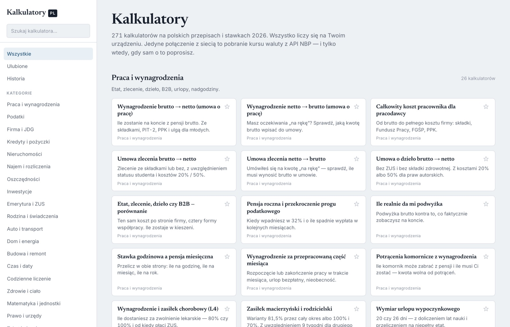
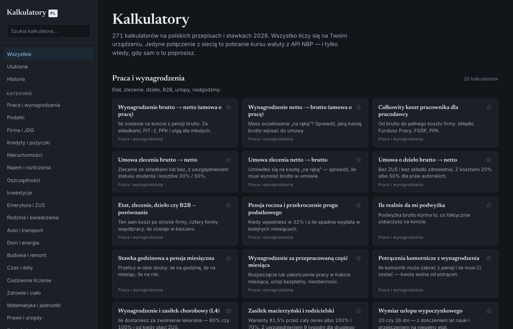
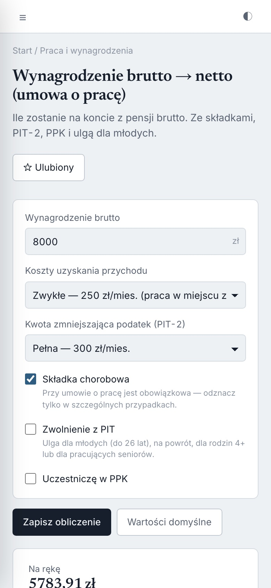
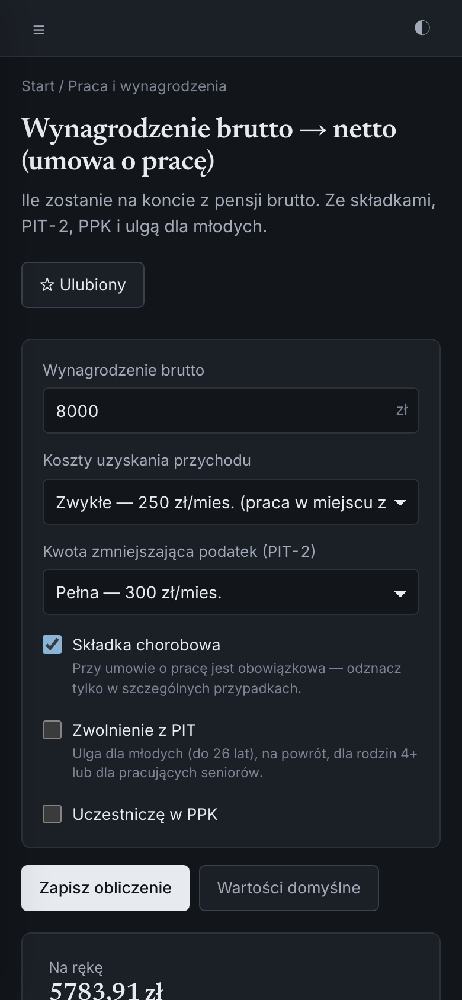

Policz to sam, zanim zapytasz księgowej
273 kalkulatorów liczących według polskich przepisów i stawek 2026 — od wynagrodzenia i podatków, przez kredyt i najem, po delegacje i codzienne rachunki. Wszystko liczy się na Twoim urządzeniu.
Bez konta, bez instalacji, bez wysyłania danych. Działa też offline.


Dlaczego to działa inaczej
Kalkulator, który pokazuje rachunek
Większość kalkulatorów w sieci wyrzuca jedną liczbę i każe w nią wierzyć. Tutaj przy każdym wyniku dostajesz rozbicie na składniki, użyte stawki i założenia — możesz je sprawdzić albo zmienić.
Polskie przepisy, nie kalka z zagranicy
Skala 12%/32%, kwota wolna, ZUS przedsiębiorcy, ryczałt, PCC, diety z rozporządzenia. Wszystkie stawki siedzą w jednym pliku i są widoczne na stronie „Parametry”.
Widać, skąd wziął się wynik
Pod każdą kwotą jest rozbicie, tabela i lista założeń. Nie musisz zgadywać, czy kalkulator uwzględnił PPK, ulgę dla młodych albo limit 30-krotności.
Działa bez internetu
Cała aplikacja to jeden plik HTML. Zapisz go na dysku i otwieraj bez sieci — w pociągu, u klienta, na budowie.
Ulubione i historia
Kalkulatory, których używasz najczęściej, trzymasz pod ręką. Historia zapamiętuje obliczenia, a formularze — ostatnio wpisane wartości.
Dokumenty do druku
Edytor delegacji wystawia polecenie wyjazdu i rachunek kosztów podróży — gotowe do podpisu, z kursem waluty pobranym z tabeli NBP.
Twoje dane są Twoje
Jeden przycisk eksportuje wszystko do pliku JSON, drugi wczytuje kopię. Format jest stabilny i ten sam w przeglądarce oraz w aplikacji.
20 kategorii, 273 pozycji
Od pierwszej wypłaty po rozliczenie spadku
Zestaw rósł wokół pytań, które Polacy realnie wpisują w wyszukiwarkę — a nie wokół tego, co najłatwiej policzyć.
Na dobry początek
Najczęściej otwierane
Kliknij, żeby wejść prosto w kalkulator.
iPhone · iPad · Mac
Ten sam zestaw w natywnej aplikacji
Aplikacja na urządzenia Apple to ta sama, sprawdzona logika w natywnej powłoce SwiftUI — z tym, czego przeglądarka nie potrafi.
- ✓Synchronizacja przez iCloud Drive. Ulubione, historia i zapisane delegacje wędrują między telefonem, iPadem i Makiem.
- ✓Eksport delegacji do PDF. Polecenie wyjazdu i rachunek kosztów prosto z telefonu, gotowe do wysłania.
- ✓Kursy walut z API NBP. Średni kurs z dnia poprzedzającego rozliczenie, z numerem tabeli.
- ✓Działa bez sieci. Wszystkie obliczenia są w aplikacji, nie na serwerze.


Prywatność
Twoja pensja to nie jest niczyj interes
Kalkulatory finansowe wiedzą o Tobie więcej niż bank: ile zarabiasz, ile masz kredytu, ilu masz pracowników. Dlatego tutaj obliczenia w ogóle nie opuszczają urządzenia — nie z polityki prywatności, tylko z konstrukcji.
Nie zbieramy adresu e-mail, bo nie ma gdzie go wpisać.
W samych kalkulatorach nie ma analityki, pikseli ani zewnętrznych bibliotek. Ta strona zapowiadająca liczy odwiedziny przez Google Analytics — szczegóły niżej.
Wpisane kwoty nigdzie nie są wysyłane — cały silnik podatkowy działa lokalnie.
Do api.nbp.pl, wyłącznie po kliknięciu przycisku
w edytorze delegacji. Wysyłany jest kod waluty i data — nic więcej.
Ulubione i historia trafiają do pamięci przeglądarki, a w aplikacji Apple do Twojego iCloud Drive. My nie mamy do nich dostępu.
Dla porządku, bez drobnego druku: ta strona używa Google Analytics, żeby policzyć odwiedziny i sprawdzić, skąd trafiają — zapisuje w tym celu ciasteczka i przekazuje Google dane o wizycie. Strona i aplikacja webowa pobierają też kroje pisma z Google Fonts. Aplikacja z kalkulatorami nie ma żadnego z tych skryptów, a wpisywane w niej kwoty nie opuszczają urządzenia niezależnie od powyższego.
Pytania
Zanim zapytasz
Czy to jest darmowe?
Tak, w całości i bez ograniczeń. Nie ma wersji płatnej, limitu obliczeń ani funkcji schowanych za rejestracją.
Skąd pewność, że stawki są aktualne?
Wszystkie progi, stawki i limity są w jednym pliku parametrów, a ich wartości — razem ze źródłem — widać na stronie „Parametry 2026” w samej aplikacji. Możesz je sprawdzić przed użyciem wyniku.
Czy mogę używać tego w pracy zawodowo?
Kalkulatory mają charakter informacyjny i pomagają oszacować kwoty oraz zrozumieć, z czego się składają. Nie zastępują porady księgowego, doradcy podatkowego ani prawnika — przy ważnych decyzjach zweryfikuj wynik u specjalisty.
Czy działa na telefonie?
Tak. Strona jest responsywna i działa w przeglądarce mobilnej. Dla urządzeń Apple jest dodatkowo natywna aplikacja z synchronizacją przez iCloud i eksportem PDF.
Czy mogę zapisać aplikację na dysku?
Tak — to jeden plik kalkulatory.html. Zapisz go u siebie i otwieraj
dwuklikiem, także bez internetu.
Co się stanie z moimi danymi, gdy wyczyszczę przeglądarkę?
Ulubione i historia zniknął razem z pamięcią przeglądarki. Zanim to zrobisz, wyeksportuj kopię do pliku JSON na stronie „Twoje dane” — wczytasz ją później w przeglądarce albo w aplikacji na iPhonie.
Sprawdź swoją pierwszą kwotę
Bez zakładania konta i bez podawania czegokolwiek o sobie. Otwiera się od razu.
Otwórz 273 kalkulatorów